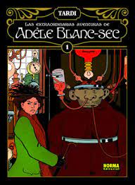
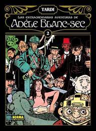
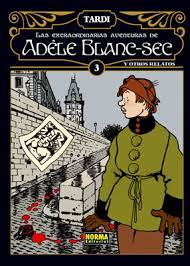

Imagenes insertadas con referencias absolutas:


visita /outra_carpeta/index.html para ver a segunda páxina
Páxina noutra carpeta (Ruta absoluta)Imagenes insertadas con referencias absolutas:
Imagenes insertadas con referencias relativas:
  